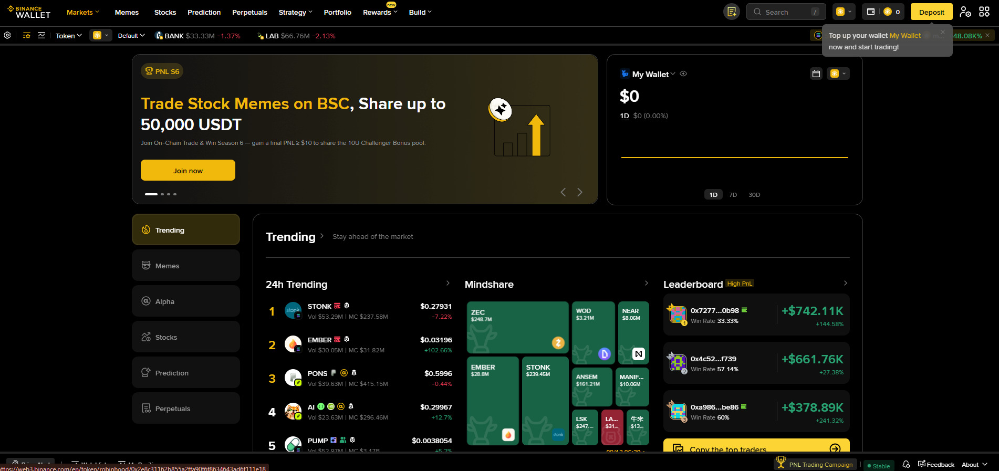

باب 54: Binance Web3 Wallet اور DEX — خود مختار ملکیت
یہاں سے کہانی بدلتی ہے۔ بائننس ایکسچینج میں آپ کے فنڈز کسٹوڈیل ہوتے ہیں (بائننس کلید کا مالک ہے)، مگر Web3 Wallet/DEX میں کلید آپ کے پاس ہوتی ہے۔ یہ آزادی کے ساتھ بڑی ذمہ داری بھی لاتی ہے — seed phrase گم ہو تو کوئی واپس نہیں لا سکتا۔

تصویر 54.1: DEX (Decentralized Exchange) کا انٹرفیس — بائننس ایکسچینج کے برعکس، DEX پر ٹریڈ براہِ راست آپ کے والیٹ سے ہوتی ہے اور کلید آپ کے پاس رہتی ہے۔
🎯 اس باب میں آپ سیکھیں گے
Custodial بمقابلہ Self-custodial والیٹ کا بنیادی فرق
Web3 Wallet کیا ہے اور کیوں استعمال ہوتا ہے
DEX کیسے کام کرتا ہے (AMM، Liquitity Pool)
On-chain ٹریڈ کے فوائد اور رسک
Gas Fee، Slippage اور Approvals
Seed Phrase اور Private Key کی حفاظت
📖 54.1 Custodial بمقابلہ Self-Custodial
پہلو
Binance Exchange
Web3 Wallet / DEX
کلید کس کے پاس
بائننس
آپ
فنڈز کی ملکیت
بائننس حقدار
آپ
رسائی
پاس ورڈ + 2FA
Seed/Private Key
توثیق
مرکزی
بلاک چین پر خودکار
گمشدگی
Support سے ری سیٹ
کوئی ری سیٹ نہیں
سودے
منظم، تیز
آہستہ، گیسی فیس
طلائی جملہ: "Not your keys, not your coins" — جب تک کلید آپ کے پاس نہیں، کوائن کا اصل مالک آپ نہیں۔
📖 54.2 Web3 Wallet کیا ہے؟
ایک خود مختار والیٹ (in-app) جو بائننس ایپ کے اندر دستیاب ہے
آپ کی Private Key/Seed Phrase خود آپ کے پاس
BSC، Ethereum، Polygon اور دیگر نیٹ ورکس کو سپورٹ
dApps، NFT Marketplace اور DeFi پروٹوکول سے جڑنے کا ذریعہ
اکاؤنٹ کے بدلے Nefarious رابطوں سے آپ خود لاگ اِن ہوتے ہیں
بنیادی باتیں
Seed Phrase (12/24 الفاظ) → ماسٹر بیک اپ (کسی کو نہ دیں)
Private Key → ایک اکاؤنٹ کی کلید
Public Address → جہاں فنڈز وصول کرتے ہیں
Gas Fee → نیٹ ورک کی ٹرانزیکشن فیس (BNB/ETH)
📖 54.3 DEX کیسے کام کرتا ہے؟
AMM (Automated Market Maker): کوئی مرکزی آرڈر بک نہیں؛ قیمت Liquidity Pool سے آتی ہے۔
Liquidity Pool: USDT + BNB
آپ BNB دیتے ہیں → Pool سے USDT ملتا ہے
قیمت = Pool کے دو اثاثوں کا تناسب
Slippage = آپ کے سائز کے مطابق قیمت کا فرق
DEX کے فوائد
غیر مرکزی — کوئی KYC/اکاؤنٹ بندش نہیں
ملکیت آپ کے پاس
نئے ٹوکنز اکثر DEX پر پہلے بھی دستیاب
DEX کے رسک
Scam Tokens — کوئی بھی بغیر جانچ ٹوکن جاری کر سکتا ہے (Rug Pull)
Slippage اور MEV/Front-running
Gas Fee — بھیڑ میں مہنگی
Approvals — dApp کو آپ کے ٹوکن کے استعمال کی اجازت؛ غلط dApp = فنڈز کی اجازت
Bridge خطرہ — کراس-چین برج ہیکس کی زد میں
📖 54.4 حفاظتی اصول
✅ Seed Phrase کبھی ڈیجیٹل میں شیئر نہ کریں (Screenshot/کلاؤڈ نہیں)
✅ کاغذ پر لکھ کر محفوظ جگہ رکھیں (دو کاپیاں، الگ جگہیں)
✅ صرف آفیشل DEX/dApp استعمال کریں
✅ Token Contract Address آفیشل ذریعہ سے تصدیق کریں
✅ بڑی Tradese سے پہلے چھوٹی ٹیسٹ
✅ Approvals باقاعدہ Revoke کریں
✅ Phishing لنک: Dex سے باہر کلک نہ کریں
⚠️ عام غلطیاں
❌ Seed phrase شیئر کرنا — ایک منٹ میں سب ختم۔
❌ خود مختار پرس میں بڑی رقم رکھنا بغیر بیک اپ۔
❌ ناواقف ٹوکن خریدنا بغیر Contract Address تصدیق۔
❌ Approvals نظر انداز کرنا — بعد میں خالی Wallet۔
❌ Gas/Slippage اعلیٰ پر trade کرنا۔
❌ Fake dApp/Marketplace کا لنک کھولنا۔
❌ Web3 کو بائننس اکاؤنٹ سمجھ کر Support سے ریکوری کی امید۔
✅ خلاصہ
Web3 Wallet/DEX = خود مختار، کلید آپ کی، بیک اپ آپ کی ذمہ داری۔
DEX قیمت AMM/Liquidity Pool سے لیتا ہے، مرکزی آرڈر بک نہیں۔